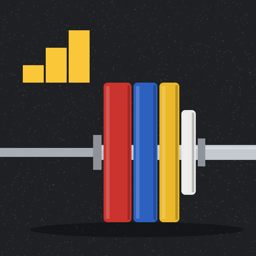

プレートを付ける筋トレ記録
重さはバーにプレートを付けて入れる、筋トレの記録。iPhone と iPad のアプリです。
重さを数字で打たずに、25（赤）・20（青）・15（黄）・10（緑）・5（白）・2.5・1.25 kg のプレートを押して、バーの両側に付けます。重さはバーとプレートから自動で出て、「片側：20・10・2.5」のように、ジムで付けるプレートがそのまま見えます。前回の記録と種目ごとの回数の幅から「次の一段」（同じ重さで ＋1回、全セットが上の回数に届いたらいちばん軽いプレート1組だけ重く）を1つだけ出し、ボタン1つでバーに付け直せます。
- 付いたプレートを押すと外れます。ジムにないプレートは設定で外せます
- ダンベルは片手の重さ、マシンはピンの重さ、自重は回数だけ（重りを足したときは足した重さ）で入れられます
- 種目はいくつでも足せます。名前を直す・並べ替える・消すもできます
- セットのあと、休む時間を数えます
- 日ごとの記録、種目ごとのいちばん重いセットのグラフ。CSV で書き出せます
- 登録・課金はありません。記録はこの端末の中だけに保存します。画面のいちばん下に小さな広告が出ます（画面いっぱいの広告・動画の広告は出さず、広告の音は消しています）